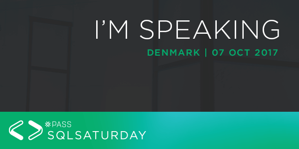

(work in progress)
| Event | Date | Session |
|---|---|---|
| 24.01.2020. | First steps with SQL Server on Docker | |
| 28.09.2019. | How does the recursive CTE work? | |
| 14.09.2019. | First steps with SQL Server on Docker | |
| 31.08.2019. | First steps with SQL Server on Docker | |
| 14.05.2019. | SQL Server + Docker – pierwsze kroki | |
| 09.02.2019. | Testuj swoje pakiety SSIS z ssisUnit | |
| 18.01.2019. | Start testing your SSIS packages with ssisUnit | |
| 16.10.2018. | Start testing your SSIS packages with ssisUnit | |
| 13.10.2018. | Start testing your SSIS packages with ssisUnit | |
| 06.10.2018. | Start testing your SSIS packages with ssisUnit | |
| 01.09.2018. | Start testing your SSIS packages with ssisUnit | |
| 16.05.2018. | Zacznij wreszcie testować swoje pakiety SSIS | |
| 07.10.2017. | Automate your SSIS deployment process | |
| 16.05.2017. | Zautomatyzuj swój proces wdrażania projektów SSIS |
Stickers
